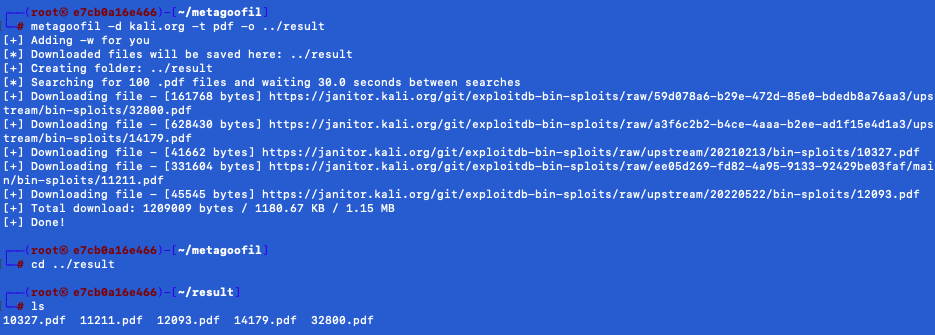

Metagoofil va effectuer une recherche dans Google pour identifier et télécharger les documents sur le disque
local. Il permet de collecter des informations et a été conçu pour extraire les métadonnées de documents publics
(pdf, doc, xls, ppt, docx, pptx, xlsx) appartenant à une entreprise cible.
Il s'agit d'un outil gratuit et open-source conçu pour extraire toutes les informations des métadonnées des
documents publics disponibles sur les sites web. Cet outil utilise deux bibliothèques pour extraire les données.
Il s'agit de Hachoir et de PdfMiner.
Après avoir extrait toutes les données, cet outil génère un rapport qui contient les noms d'utilisateurs, les
versions de logiciels et les noms de serveurs ou de machines qui aideront les testeurs de pénétration dans la phase
de collecte d'informations. Cet outil peut également extraire les adresses MAC des documents Microsoft Office. Cet
outil peut donner des informations sur le matériel du système par lequel il a généré le rapport de l'outil.
Pour ce tutoriel, nous utiliserons docker pour avoir une machine pour lancer l'outil Metagoofil.
Télécharger le fichier suivant :
docker-compose.yml
Taper les commandes suivantes :
docker-compose up -dPour utiliser la machine avec l'outil Metagoofil, tapez :
docker exec -it metagoofil bashAccéder au répertoire de l'outil avec la commande suivante :
cd metagoofilInstaller les dépendances requises avec la commande suivante :
python3 -m pip install -r requirements.txtExécuter la commande suivante pour collecter les informations sur le site web cible "kali.org":
metagoofil -d kali.org -t pdf -o ../resultVous pouvez maintenant accéder aux résultats dans le dossier de sortie "result" et analyser les informations collectées pour déterminer s'il y a des informations sensibles exposées.
Accéder au ficher de sortie avec la commande suivante :
cd ../resultSi des informations sensibles sont trouvées, déterminer la gravité de la vulnérabilité et élaborer un rapport de sécurité détaillé
Le résultat apparait comme ceci :
